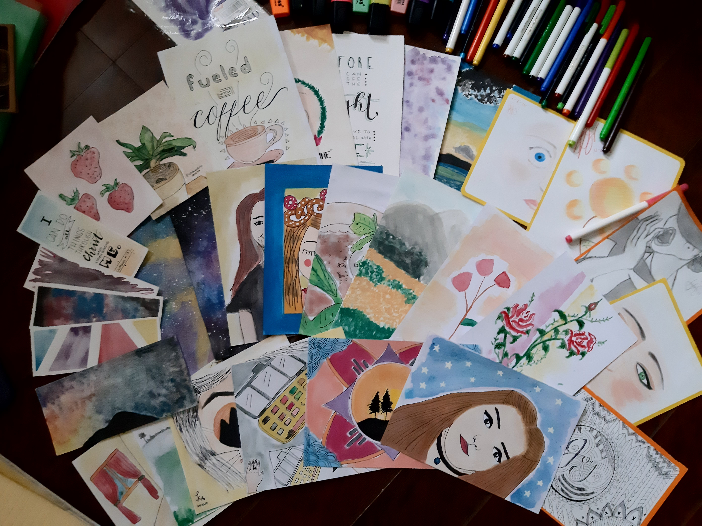
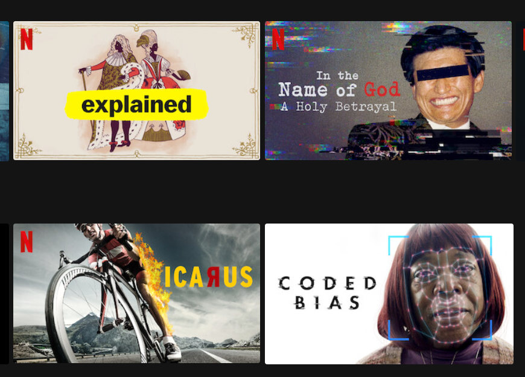
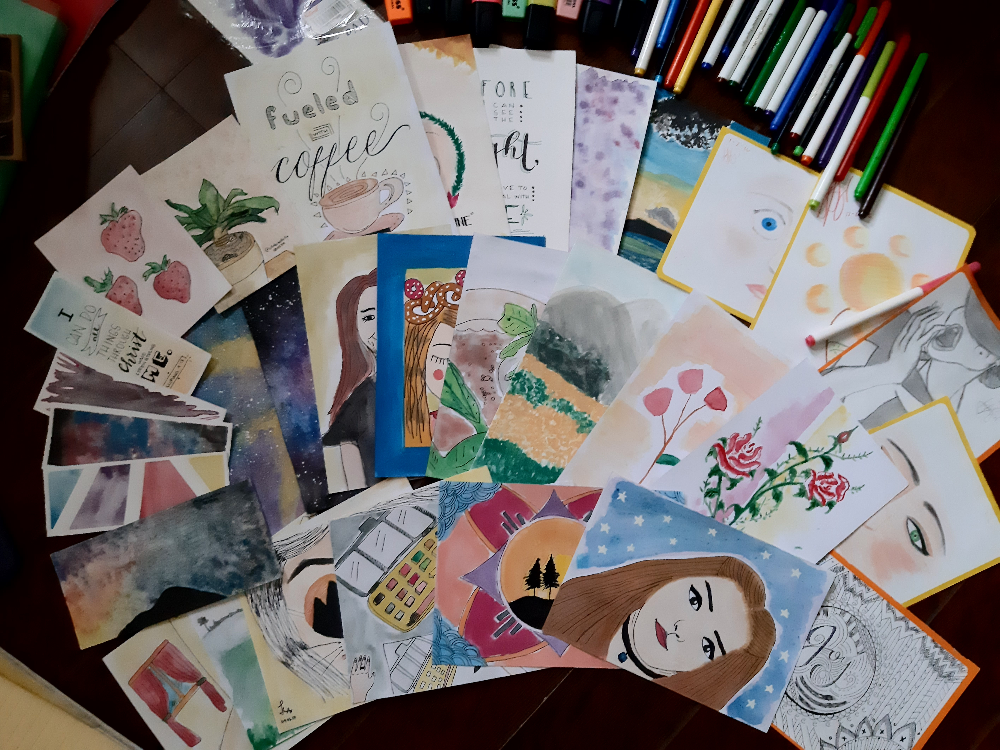
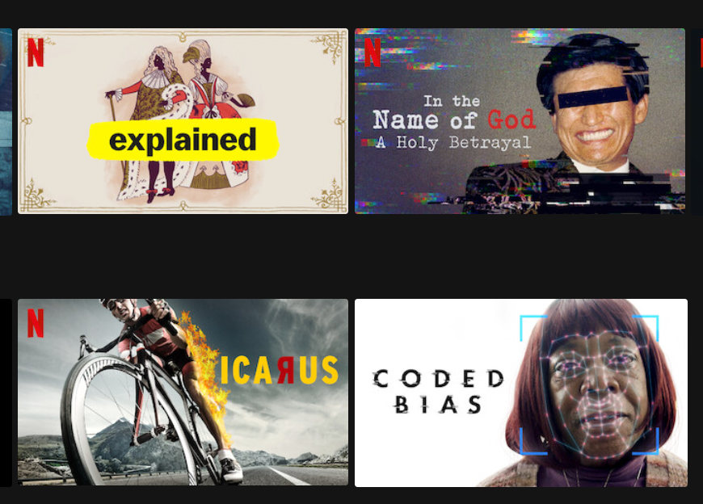
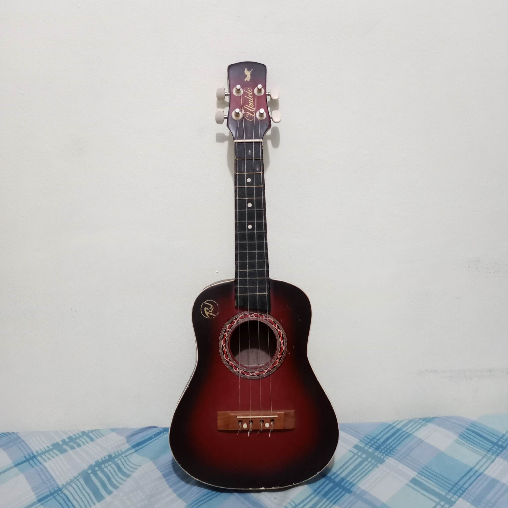
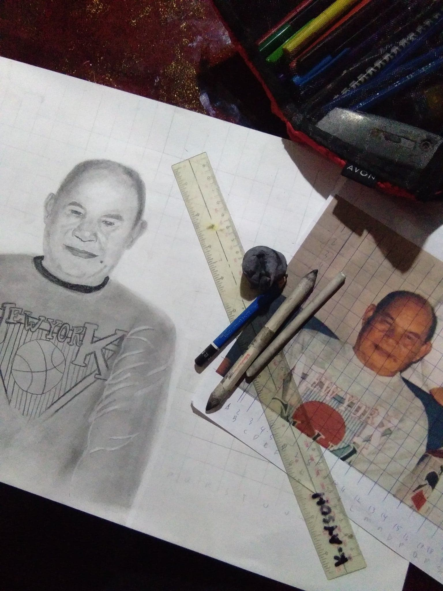

Skills

Hobbies

Interests
|

Skills |
Hobbies |

Interests |
My skills are creating art, playing some instruments, and the ability to be independent in terms of learning. Most of my skills were learned just through watching. For art and music, I just watch step-by-step tutorials or try to follow along while watching the tutorials. My mom used to help me with my art projects during preschool and elementary. As I watch her, I kind of adapt to how she does my projects and that's where my love for arts and crafts blossomed.I like learning new things, after I graduated senior high school, I signed up for free online courses in TESDA, CourseBank, Udemy, Coursera, and others since I was not enrolled in college during the surge of COVID-19 in 2020. I finished different online programs in TESDA such as Bread and Pastry Production, Computer Systems Servicing, Food and Beverage Servicing. I don't have an NCII yet because I need to enroll to a face-to-face assessment first. I also don't have the time to enroll for an assessment because I am currently studying. Plus, we don't have an extra budget for it. Aside from these online courses in TESDA, I learned basic HTML and CSS programming through Udemy. I wasn't able to finish it but it's fine since it made me recognize the basics. It was fun and also a nice way to kill time.
 |
 |
My hobbies revolve around arts and crafts. I knew the basics of Adobe Photoshop when I was in grade 6 but I did not really focus on it at that time. Back in junior high, I drew a lot. I was exposed to the traditional way but after a few years, I started to embrace digital art. Transitioning from traditional to digital was a struggle for me so what I did was I draw on a paper, scan it, and trace it digitally. Then, I sell those drawings as stickers. I practiced a little more and now I can’t get off of digital. Sometimes when I need to sketch something using pen and paper, it feels hard to transition back to traditional.The pandemic came and I explored a lot of craft activities. I had no money so I thought of something that I could sell. I love earrings so why not make and sell some? I bought chains, hoops, charms, and everything that I need to get started. I spent days creating different earring designs and how the packaging should look. I sold a couple of pairs of earrings. It’s not much but I am happy that I saved money from my income. There was a time where I just saw a Youtube video where the person was creating rugs by hand. I watched it for days until I bought my own tools. That’s when I learned how to create rugs — well, coasters in my case, since the base cloth was too small — using a punch needle.
Typhoon Ulysses came, so I decided to take art commissions so I could donate a portion of my income to those who need it. Recently, I learned how to crochet, thanks to Youtube. The first thing I did was to create a bonnet, then a hat, and a set of coasters which I gave to my relatives as a gift. It’s actually fun that I can wear and use my work. I am looking forward to more hobbies that I can tap into.
|  |  |
|
My main interest is listening to KPop. Back then, my interest was learning how to make music and film photography. I eased off of it after some time. Now, one of my interests is watching random tutorials and various documentaries. The documentaries that I usually search for are unsolved crimes or mysteries. Sometimes I read and write short poems, too. The themes or topics I would write depend on the emotion that I am feeling. It is also a good way to release stress.